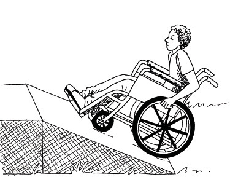
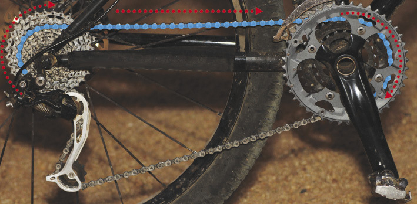
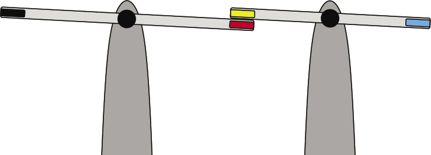
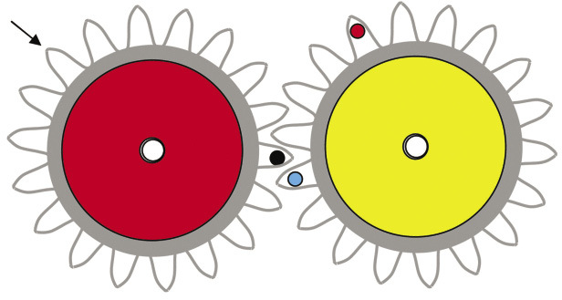
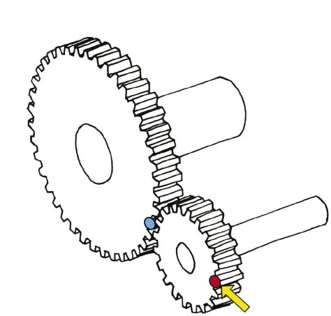
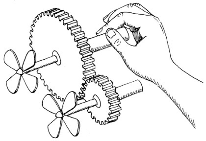
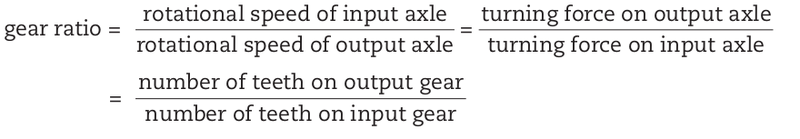

Figure 1: You use different
combinations of gears on a bicycle when you cycle up a moderate
slope or a steep slope. Why?
Words to talk
about hills and roads going upwardslevel.slope,
a gradient, or an
incline.gentle incline.moderate incline.steep incline.Figure 2: Which path will you take up the
mountain? Which path will take the longest?
Levers, pulleys and cranks
are different types of mechanisms. In this chapter,
you will learn about more types of mechanisms.
mechanical
advantage, but a distance disadvantage. You get a
mechanical advantage when a machine makes it easier to lift or
move something.Figure 3: A pair of pliers that give
a mechanical advantage.mechanical
disadvantage, but a distance advantage. You get a
distance advantage when a machine makes something move
further.Figure 4: A pair of kitchen tongs
that give a distance advantage.inclined
plane. The roof of a house that goes up at an angle is
also an inclined plane.Figure 5
A ramp is also an
inclined
plane.
Figure 6Figure 7
Which design will
be the easiest for the boy to get from the ground to the higher
place, and why? Hint: read the part on "Words to talk about
hills and roads going upwards" at the bottom of page 57.
Will the boy travel
the same distance up both ramps A and B, or will he travel a
longer distance on one of the ramps? If yes, which one?
Will the force with
which the boy has to turn the wheels be the same on both ramps,
or will it be greater on one of the ramps? If yes, which
one?
Use the following
words to write a few sentences to explain why it is easier for
the boy to go up the one ramp than the other: input force,
output force, input distance, and output distance.
Which ramp gives
the boy the greatest mechanical advantage?
Figure 8: The wedge shape of the head
of an axe makes it easier to cut wood.
Is the input
force greater or smaller than the output force? Or are they the
same?
Does an axe give a
mechanical advantage or a distance advantage?
level. If a house is
not level, and you put a ball on the floor, the ball will roll
to the lowest side or corner of the house.
Figure 9: Wedges
can be used to lift upvery heavy objects, even houses!rotational movement
into a straight or linear
movement.
The words "roll" and
"rotate" both come from the same old Latin word "rota".
"Rotational movement" means a rolling or circular
movement.
The word "linear" comes from
the word "line". "Linear movement" means movement in a
straight line.
friction would be less.
Friction is the resistance
force that makes it hard to slide something along a
surface.
Figure 10Figure 11free-running
wheeldriven wheel.
Figure 12: The back
wheel of a bicycle is driven by the gear and chain
mechanism
When the
gear rotates once, the wheel rotates once.
The wheel
has a circumference of 207 cm. If the wheel rotates once, the
bicycles moves forward by 207 cm.
Therefore, when you pull the chain forward by30 cm, the
bicycle moves forward by 207 cm. That is why a driven wheel
gives a distance advantage.
Figure 13: A wheel
gives a distance advantageaxle. An axle is
for a wheel what a pivot or fulcrum is for a lever.
The
distance moved at the outside of the wheel is greater than
the distance moved at the axle. You can see this on Figure
14, where the distance moved at the outside of the wheel is
shown in blue, and the distance moved at the axle is shown in
red. For the same forwards movement, a bigger wheel will give
a smaller movement at the axle. Therefore big wheels give
less rubbing or friction at the axle.
Most
wheels have a very smooth oiled surface or bearings between
the axle and the wheel, to reduce the friction even more.
Figure 14
Why are some wheels
small and others big?
Hint: think of the
advantages and disadvantages of small wheels and of big wheels.
Also think of the weight and cost of the wheels.
A motor car, a 4 × 4 bakkie, a shopping trolley, and a skateboard each have
four wheels. For each one of these examples, which wheels are
driven and which are free-running?

Figure 15
If you push the
black end of the lever on the left down,
in what
direction will the red end of the lever move, and
in what
direction will the blue end of the lever on the right move?
If you push
the black end of the leveron the left down, will the leverturn
clockwise like this,
or anti-clockwise like this?
Figure 16: To talk about the
direction that something moves over a distance, you use the
words forwards, backwards, left, right, up and down. But
what if something does not move to anywhere else, but turns
while it stays in the same position? Then you talk about
something turning like the hands or arrows of a clock.
If you turn the
lever on the left anti-clockwise, in which direction will the
lever on the right turn?
Figure 17: You can think of a gear as
if it is made up of many levers.spur
gear. In Term 3 of this year and in Grade 9 you will
learn about other types of gears.
The red gear below
is turned anti-clockwise, until the tooth with the black dot
reaches the arrow.
Draw another
arrow to show where the tooth with the blue dot will be when
the black dot reaches the arrow.
Draw a small
cross to show where the red dot will be when the black dot
reaches the arrow.

Figure 18
In what
direction will the yellow gear turn, when the red gear is
turned anti-clockwise?
In what direction must the small gear on the right be
turned so that the blue dot will move downwards when you start
to turn?
If the small gear is turned clockwise until the red dot is back at the yellow arrow again, where will the blue dot on the big
gear be? Make an arrow on the sketch to show where it will
be.

Figure 19
If you turn the
small gear by hand, will the big gear turn faster or slower
than the small gear? Explain your answer.
input gear and an output
gear.
The input gear is also called the driver gear, and
the output gear is called the driven gear.
If the small gear in Figure 19 is turned by hand then
the small gear is the input gear.
mesh.
Any two gears that mesh turn in opposite
directions. This is called counter-rotation.
If you want the
driver gear and the driven gear to turn in the same direction
the two gears will not work. Can you make another plan?
idler gear. Its purpose is to
make the driven gear turn in the same direction than the driver
gear.Figure 20: In a
three gear set the input and output gears turn in the same
direction.
Look at the system
of gears in Figure 21. If the gear on the left is the driver
gear, will the driven gear turn faster or slower than the
driver, or will it turn at the same speed?
Figure 21
Look at the gears on the right. The big gear is the input gear, and the small gear is the output gear.
Each gear is fixed to an axle, and the axle drives a fan. The
speed with which the fan turns is called the rotational speed of the
axle.
Will the fan on the big gear rotate faster or slower than the
fan on the small gear, or will it rotate equally fast?

Figure 22
Will the force
with which you turn the axle of the big input gear be smaller
or bigger than the turning force on the axle of the small
output gear?
Gear ratio and speed ratio is the same thing.
It can also be called "velocity ratio".
gear ratio of
20 ÷ 40 = ½. You can also write it as the ratio
1:2. It means that the input gear turns at half the speed of
the output gear.
Turning force is also called
torque.

Figure 23: Gear choices on a
bicycle
What is the biggest gear ratio that you can choose on this bicycle? Choose
the front and the back gears that you will use, and then
calculate the gear ratio.
What
combination of the front gear and the back gear will you choose
to a go up a very steep hill?


 level. If a house is
not level, and you put a ball on the floor, the ball will roll
to the lowest side or corner of the house.
level. If a house is
not level, and you put a ball on the floor, the ball will roll
to the lowest side or corner of the house.


 idler gear. Its purpose is to
make the driven gear turn in the same direction than the driver
gear.
idler gear. Its purpose is to
make the driven gear turn in the same direction than the driver
gear.